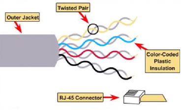
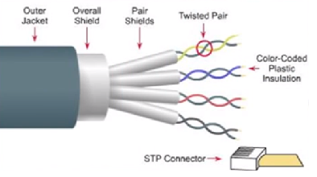
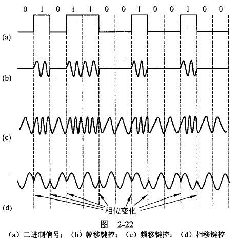
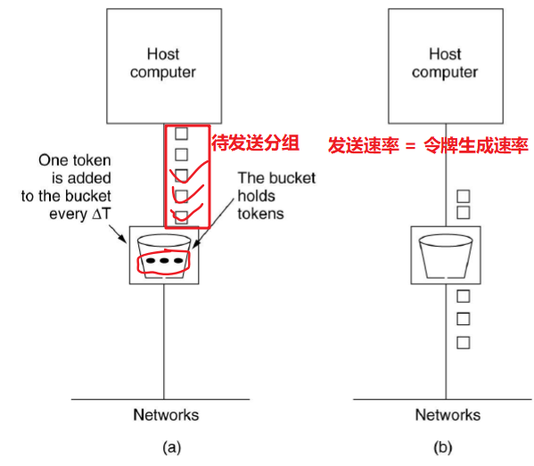
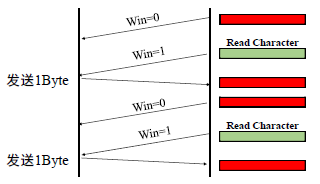

两个设备如何通信？
第1章 引言
网络硬件
PAN
- Personal Area Network 个域网
- 蓝牙
LAN
- Local Area Network 局域网
- WiFi、路由AP、以太网
MAN
- Metropolitan Area Network 城域网
- 卫星、基于有线电视得城域网
WAN
- Wide Area Network 广域网
- VPN
Intenet
- 互联网
网络软件
协议层次结构
- 特点
- 每一层都将数据和控制信息传递给它的下一层，传递到最底层后，再往上传，第一层下面是物理介质
- 每一对相邻层次之间的是接口
面向连接与无连接服务
- 面向连接服务：按电话系统建模
- 无连接服务：按照邮政系统建模
服务原语
原语：一个服务由一组原语正式说明，用户进程通过这些原语来访问该服务。
原子性

参考模型
OSI模型
TCP/IP模型
本书模型
常用术语
- 层次栈/分级栈：网络组织的一种形式，每一层都建立在其下一层的基础上，层的个数、每一层的名字、每一层的内容和功能各个网络都不尽相同。每一层的目的是向上一层提供特定的服务，而把服务实现的细节对上层屏蔽。
- 协议：通信双方就如何进行通信的一种约定。
- 对等体：不同机器上构成相应层次的实体。
- 网络体系结构：层和协议的集合。网络体系结果的规范必须包含足够的信息，以便实现者为每一层编写的程序或设计的硬件能遵守有关协议。
- 协议栈：一个特定的系统所使用的一组协议，即每一层一个协议。
- 服务：某一层向其上一层提供的一组原语。
- 统计复用：许多网络设计根据主机的短期需求变化动态共享网络带宽，而不是给每个主机分配可能用也可能不会用的固定比例带宽。
- 拥塞：太多的计算机要发送太多的流量，而网络没有能力传递所有的数据包。
- 存储-转发交换：中间节点只能在收到报文的全部内容后再将该报文发送给下一个节点。
- 直通式交换：报文还未全部接受完毕之前就向下一个节点传输。
- 请求-应答服务：发送方传输一个包含了每个请求的数据报，接收方以一个包含了请求结果的应答数据报作为反馈。
- ISP：互联网服务提供商，即向广大用户综合提供互联网接入业务、信息业务和增值业务的电信运营商。
- P2P：对等计算机网络，是一种在对等者（Peer）之间分配任务和工作负载的分布式应用架构，是对等计算模型在应用层形成的一种组网或网络形式。
- router：路由器（Router），是连接因特网中各局域网、广域网的设备，它会根据信道的情况自动选择和设定路由，以最佳路径，按前后顺序发送信号。
- Cable：有线电视电缆
- FTTH：光纤到户是一种光纤通信的传输方法。是直接把光纤接到用户的家中（用户所需的地方）。
- DSL：数字用户线路，是以电话线为传输介质的传输技术组合。
第2章 物理层
主要功能：提供透明的比特流传输
注意
- 封装好的数据以“0、1”比特流形式传输
- 物理层上的传输不关心比特流里携带的信息，只关心其正确搬运
物理层四大特性
- 机械特性：指明接口所有接线器的形状、尺寸、引脚数和排列等，如RJ45
- 电气特性：指明在接口电缆的各条线上出现的电压范围
- 功能特性：指明某条线上出现的某一电平的电压表示何种意义
- 规程特性：指明对于不同功能的各种可能事件的出现顺序规程的概念类似协议
概念
- 物理层上数据的传输：信号
- 信号：数据的电气或电磁表现
- 模拟信号：对应时域的信号取值是连续的
- 数字信号：对应时域的信号取值是离散的
- 码元：不同离散值的基本波形
- 物理带宽：传输过程中振幅不会明显衰减的频率范围（单位Hz），物理特性，通常取决于介质材料的构成、厚度、长度
- 数字带宽：单位时间内流经的信息总量。尼奎斯特定理和香农定理描述了物理带宽和数字带宽的关系。
数据通信的理论基础
调制解调
- 调制：将模拟信号转换成数字比特
- 解调：将数字比特转换为模拟信号
理论基础
- 傅里叶变换
- 任何行为周期为T的函数$g(t)$可表示为正余弦函数组合的无穷级数$g(t) = \frac{1}{2}c + \sum_{n=1}^{\infty}a_nsin(2 \pi n ft) + \sum_{n=1}^{\infty}b_ncos(2 \pi nft)$
- 尼奎斯特定理
- 在无噪声信道中，当物理带宽为$B$ Hz，信号离散度等级为$V$级，则该信道最大数据速率 （数字带宽）$ = 2B \ log_2V \ \ bps$，计算后还要乘每秒采样数。
- 任意一个信号的通过一个物理带宽为B的低通滤波器只要进行每秒2B次的采样就可完全重构出被滤掉的信号
- 信道一定，物理带宽确定时，要提高数字带宽只有增加离散等级
- 香农定理
- 在有噪声信道中，如果物理带宽为$B$ Hz，信噪比为S/N，则该信道最大数据速率 （数字带宽）$ = B \ log_2(1+\frac{S}{N}) \ \ bps$
- $分贝值=10log_{10}\frac{S}{N} \ \ db$
- 信道一定，物理带宽确定时，要提高数字带宽只有增加信噪比
引导性传输介质
物理层的功能是搬运比特，承载比特的就是传输介质
传输介质按是否有形分为引导性（有线）和非引导性（无线）两种
同轴线缆
- 优点：比非屏蔽双绞线有更好屏蔽特性和更大的带宽，而且有很好的抗噪性
- 典型：中心导体（铜芯） - 绝缘材料 - 网状导体 - 外部绝缘层
- 分类：基带同轴电缆（50Ω，用于数字传输，屏蔽层为铜）、宽带同轴电缆（75Ω，用于模拟传输，屏蔽层为铝），还分为粗缆和细缆

双绞线
两根具有绝缘层的铜导线按一定密度，逆时针绞在一起
- 两根平行的线构成一个很好的天线，当两根线在一起后，不同电线产生的干扰波会相互抵消，从而能显著降低电线的辐射。
- 对外部噪声有更好的免疫力，因为噪声对两根电线的干扰是相同的，而它们的电压却不会改变。
典型——5类线/猫5
非屏蔽双绞线（UnshieldedTwisted Pair，缩写UTP）

提供10M、100M的数字带宽使用了其中的2对线（12、36）分别用于收、发
1000M以太网中，用到了全部的4对线
最大传输距离100米，广泛用于局域网中
优点：成本低、尺寸小、易于安装
缺点：易受干扰、传输距离和性能受到绞距影响
568B标准排线：白橙-橙-白绿-蓝-白蓝-绿-白棕-棕
直通线和交叉线：连接两台相同设备用交叉线（线顺不同），但现在设备都可以自适应，故标准排线即可。
屏蔽双绞线（Shielded Twisted Pair，STP），在双绞线和外层绝缘封套之间有一个金属屏蔽层（多了2层）。

- 优点：抗EMI/RFI干扰
- 缺点：成本高、安装不易
链路
- 全双工链路：双向可同时使用
- 半双工链路：可以双向使用，一次只能用一个方向
- 单工链路：只允许一个方向上传输
电力线
特点：非常方便，但是传输数据较为困难，因为分发电能和分发数据信号是两项完全不同的工作，需要考虑到电噪声等影响。
光纤
光纤——光导纤维，极细的玻璃纤维构成，把光封闭在其中并沿轴向进行传播
横截面：极细的玻璃芯 - 玻璃覆盖层 - 塑料封套，玻璃覆盖层的折射率比玻璃芯低以保证光都被限制在玻璃芯内
优点：重量轻、损耗低、不受电磁辐射干扰、传输带宽和通信容量非常大
缺点：昂贵、易断裂
多模光纤
- 玻璃芯直径$50\mu m$
- 光源：LED
- 许多不同光束以不同角度来回反射着向前传播，每一束光有不同模式（入射角度大于临界值的光束会在内部反射，多个角度所以叫做“多模”）。
- 常用规格：$62.5/125 \mu m$
单模光纤
- 玻璃芯直径$10\mu m$
- 光源：激光
- 光纤直径减少到几个光波波长时，光只按直线传播而不会反射。
- $100Gbps$
- 常用规格：$8.3/125 \mu m$
光源
- 光传输系统组成：光源、传输介质、探测器
- 光源：LED（距离较短）和激光（成本较高）
- 光通过玻璃的衰减
- 现今光纤通信最常用的三个波段集中在：0.85、1.30、1.55微米
- 三种拼接方式（光纤断了续接）
- 连接器（10%~20%光损失，但使重配工作较易）
- 机械手段拼接：两端切口放入特殊的套管，夹紧（10%光损失）
- 熔合：两端切口熔合为一个新的连接
- 与铜线的比较
- 细、轻
- 安装费用低
- 不受电源浪涌、电磁干扰或电源故障等影响，不易化学腐蚀
- 难被搭线窃听（光纤不漏光）
- 光传输基本是单向
- 光纤接口成本原高于电子接口
无线传输
无线电传输
光通信
复用技术★
多个用户共享同一根信道，是在干线上的技术，主要解决干线起点如何复用，干线终点如何分离的问题
频分多路复用FDM
- 分割频段
- 利用基带传输的优势使多个用户共享一个信道
- 一个信道多个不同频段，实现信道的复用
- 正交FDM（Orthogonal FDM，简称OFDM）
- 一种更好地利用带宽的FDM，没有了保护带，并且子带之间相互重叠，同样的干线承载更多的用户
- 被广泛用于802.11、有线电视网
波分多路复用WDM
- WDM，Wavelength Division Multiplexing
- 波长$\lambda$，$c=\lambda f$
- 按照波长分成若干份，承载不同用户的光信号
- DWDM（Dense WDM），密集波分多路复用。WDM在相邻波长间隔非常接近，子信道数目非常大时，WDM变成了DWDM。
时分多路复用TDM
分割时间，Time Division Multiplexing
每个用户周期性获得整个带宽非常短的一个时间
要求时间上必须同步，各用户需要的带宽不均衡，而TDW用户时间片的使用却是一样的，将造成信道的浪费，不高效
- STDM（TDMStatistic），统计时分多路复用
- 动态分配信道，按需分配
- 实现技术复杂，通常只在高速远程通信中使用，如ATM，用户使用情况较为平均的情况下不适合使用
*码分多路复用CDMA
- Code Division Multiple Access，扩展频谱技术，1942年海蒂拉玛受钢琴启发发明。高通开发用于3G
- CDMA允许每个站利用整个频段发送信号，没有时间限制
- 可以将TDM看作许多人按顺序交谈，将FDM看作不用人按不同语调交谈，CDMA则是每对交谈者使用不用的语言
- CDMA关键在于能够提取出需要的信号，同时拒绝所有其他的信号并把这些信号当作噪声
调制技术★
基带传输
- 定义：基带传输是按照数字信号原有的波形（以脉冲形式）在信道上直接传输，它要求信道具有较宽的通频带。基带传输不需要调制、解调，设备花费少，适用于较小范围的数据传输。 信号需要编码。
- 信号的传输占据传输介质从0到最大值之间的全部频率
- 是有线传输介质普遍采用的传输方法，比如以太网
- 数据比特直接转换为信号的一些方案，不经过调制。
- 线路编码（Line codes），发送一个样本可传输一或多个比特
- 不归零NRZ：高电平表示”1”，低电平表示“0”。（没有电压跳变。随时间累计，接收方可能无法分辨出连续几个“1”或“0”）
- 不归零逆转NRZI：在比特时间中间做电压跳变表示“1“，无跳变表示”0”。（解决了连续1问题，但连续0问题仍存在），USB里采用这种编码
- 曼彻斯特编码：在比特时间中间，电压从高跳变到低表示“1“，反之从低跳变到高表示”0“。（解决了连续0和连续1的问题，在10Base以太网中使用，但因为在比特时间中跳变故编码效率只有50%）
- 双极编码：两级电压的交替出现表示“1“，不出现表示”0”。（实现了信号的平衡）
- 4B/5B：4比特数据被映射为1个5比特模式（抛开连续0的组合，解决连续0问题），相比曼彻斯特编码效率提高80%
- 差分曼彻斯特编码：在每个时钟周期的中间必有一次电平跳变（这个跳变做同步之用）。 在每个时钟周期的起始处：跳变则说明该比特是0，不跳变则说明该比特是1。
- 时钟恢复：将数据、时钟信号异或混合在一起
通带传输
- 定义：通带传输是一种采用调制、解调技术的传输形式。在发送端，采用调制手段，对数字信号进行某种变换，将代表数据的二进制“1”和“0”，变换成具有一定频带范围的模拟信号，以适应在模拟信道上传输。在接收端，通过解调手段进行相反变换，把模拟的调制信号复原为“1”或“0”。
- 调节载波信号的幅值、相位或频率来运载比特的调制方案。
- 信号占据了以载波信号频率为中心的一段频带

信号星座图——表示某种调制方式中信号的呈现模式（调制的级别）
QAM-16（正交调幅调制Quadrature Amplitude Modulation），16表示调制方式中有$2^4=16$种不同振幅和相位的信号组合模式，意味着一个符号可传输4个比特
QPSK（正交相移键控）中，使用了4个相位角度，每次采样（码元、样本）可表达的级别有4个，每个码元可传输2 bits
QAM-64中，允许64个不同的信号组合，即64个信号级别，每个码元可传输6 bits
下图中，一个点的相位是以它为起点到原点的线与x正轴之间的角度；一个点的振幅则是该点到原点的距离
码元：承载信息量的基本信号单位。
- 数字通信中常用时间间隔相同的符号来表示一个二进制数字，该符号即称为（二进制）码元。
- 在使用时间域的波形表示数字信号时，不同离散值的基本波形，也即是码元。
- 波特率B（码率）：1s能发送码元的个数。（每秒钟信号变化的次数）
- 比特率C：位传输率、数据传输速率、数字带宽
- 波特率与比特率关系：$C = B\times log_2n$，n为信号呈现的个数，一般为2的倍数
格子架编码调制TCM（Trellis Coded Modulation）
- 提高数字带宽，要提高信号级别，即星座图上的星点，密密分布下容易导致出错率的提升。为了降低高速调制错误，在每个样本中采用一些额外的位用作纠错，剩下的位采用来传输数据。
- 比如，在V.32调制标准中，波特率2400，使用QAM-32，即每个码元传输5个比特，其中1个比特用来做奇偶校验，4个比特用来传输数据，则数据传输率只有$2400\times4=9600bps=9.6kbps$
公共电话交换网络PSTN★
PSTN低速传输原因：最后一英里
PSTN发展
- 全连通网->中心交换网->层次交换网
- 人工交换->全自动交换
电话系统结构
电话系统由主要三部分构成：
- 本地回路(Local loops)：模拟线路，连接端局和千家万户，通常用三类双绞线承担
- 干线、中继线(Trunks)：数字光纤，连接交换局
- 交换局(Switching offices)：语音接驳干线的场所，包括端局

本地回路——调制解调器、ADSL和光纤
调制解调器：将计算机产生的数字比特流转变为载波输出（模拟信号->数字信号）
- 56k（64k）的调制解调器：V.90标准电话线路频率为4kHz，采样率$=2\times 4000=8000 sample/sec$，每个码元传输8bit，其中1个比特控制错误，故传输数据速率$=8000 \times 7=56000kbps$，若算上控制错误的比特，毛速率为$64kbps$
- 连接调制解调器的本地回路带宽，被限制为4k，因为电话占频为4k；xDSL取消了电话系统里的滤波器后，可使用本地回路的全部（1.1兆）物理带宽
ADSL：“Asymmetric Digital Subscriber Lines(DSL)” ，非平衡数字用户线路
- 1999年颁布的标准G.dmt中，允许下行带宽（8Mbps，目前为24Mbps）上行带宽（1Mbps），课本$P_{116}$
- 1.1M的频宽，分为256根信道，每根4k。第1根用于简单的老式电话服务（POTS），再空闲5根， 剩下250根用于上下行控制和数据传输

光纤
- 由于本地回路通常用3类UTP来承载信号，3类UTP的物理特性限制了带宽的增长上限，故用户对带宽的需求导致了光纤的替换。
- FttH，Fiber to the Home，光纤到户
- 采用的光纤传输网络通常是无源的，这带来了更多的可靠性和安全性——光进铜退，最后一英里革命
DSLAM：数字用户线路接入复用器
NID：网络接口设备
- PON：无源光网络
中继线（干线）和多路复用★
干线是用来连接交换局，通常用光纤，要用到复用技术。
端局里特殊的设备——编解码器（codec）：$模拟信号 \rightleftharpoons 数字信号$，其中用到的技术为PCM。
脉冲编码调制，PCM，Pulse Code Modulation
- 模拟信号数字化的技术。构成了现代PSTN的核心。
- 采样、量化、编码、传输
- 每125微秒发送一个语音样值，该采样率足以捕捉4kHz电话信道带宽上的信息
时分多路复用TDM
T1载波（北美和日本），24路
每帧248=192个比特，加上控制用的 帧码，则每125微秒产生193个比特，即*数据传输率为$193bits / 0.000125 s = 1.544Mbps$**
一通电话带宽为$64kb$，那么100G光缆可同时用于163万通电话
E1载波（中国），32路语音的复用
每125微秒传递328=256个比特，即*数据传输率为$256bits / 0.000125 s = 2.048Mbps$**
TDM允许更高级别的复用，比如4条T1流复用为1条T2流，7条T2流复用为1条T3流（每一步复用有少量开销用于同步控制、成帧）
SONET/SDH，光介质上进行同步数据传输的标准
- SONET（同步光网络），美国ANSIS制定；SDH（同步数字序列），国际标准组织ITU制定。
- 每隔125微秒发送810字节数据块，SONET是同步系统故不管是否有用该帧都被发送出去，总的传输速率为51.84Mbps
- 9行，90列，有效载荷为87列，共$87 \times 9 \times 8bit \times 8000sample/sec = 50.112Mbps$
- 每帧前三列，保留用作传输系统管理信息
- 其中前三列的前三行包括section开销
- 前三列的后六行包含line开销，其中前两个字节包含了指向信息首地址的指针
- 源端正在构造SONET空帧时来了一个有效载荷数据，它可直接半途插入到当前构造的帧中，比如下图，SPE就从第1个帧的半途开始，横跨了两个帧。
- 对应于STS-n的光纤载波称为OC-n，其复用也是按比特进行的
- 如果一个载波（比如OC-3）没有被复用，而是仅承载了来自单个源的数据，则在线路名称后面加一个字母c（表示级联），因此OC-3表示由三条独立的OC-1载波构成的一条155.52Mbps载波，而OC-3c则表示来自于单个源的155.52Mbps数据流。
交换局
电路交换
- 传统的电话系统，要求通话之前建立一条端到端的通路（物理），即”建立连接“，之后话音沿通道按顺序送达。数据传输完后拆除连接
- 提前分配

数据包交换（分组交换）
- IP电话数据业务。允许包存储在交换局的内存里；每个包携带目的地址、信息（便于独立寻径）；乱序送达
- 按需分配，更好的容错能力和抗毁性
移动电话系统
常用术语
- 按钮电话系统：push-to-talk system，使用一个被安置在高大建筑物顶上的大型发射器，并且只有一个信道用于发送和接收。为了通话用户必须按一下按钮以便打开发送功能并关闭接收功能。
- 改进型移动电话系统：IMST，较按钮电话系统有两个频率，一个用于发送一个用于接收。
- 高级移动电话系统：AMPS
- 全球移动通信系统：GSM
1G：模拟语音
- 高级移动电话系统AMPS
2G：数字语音
GSM——Global System for Mobile Communications
3G：数字语音和数据
有线电视
频谱分配
第3章 数据链路层DLL
DLL概述
相比物理层关注单个比特的传输，数据链路层更关注完整信息块（帧）的可靠有效的通信。
DLL功能
- 向网络层提供一个定义良好的服务接口
- 无确认的无连接服务，广告。事先不需建立逻辑连接，事后也不用释放，若由于线路噪声造成了某一帧的丢失，数据链路层并不试图去检测这样的丢帧情况，更不会去试图恢复。
- 有确认的无连接服务，WiFi。发送方需要知道帧是否已经正确到达目的地
- 有确认的有连接服务
- 保证数据传输的有效、可靠
- 处理传输错误：差错检测和控制
- 流量控制（基于速率/反馈），接收方反馈给发送方，使其调节数据流，确保慢速的接收方不会被快速的发送方淹没
成帧——使接收方很容易发现一个新帧的开始★
- 帧PDU
- 数据处理单元Protocol Data Unit
- 帧 = 帧头(控制) + 载荷 + 帧尾(校验)
成帧：将原始的位流分散到离散的帧中
字节计数法——Byte count
- 每帧开始使以一个计数字段表示该帧的总字符数。
- 简单，但很少被使用
- 缺点：一旦出错，无法同步
字节填充的标志字节法——Byte stuffing
- 以某些特殊字符作帧的开始/结束标志，同时增加转义环节以免该字符无法表达。
- 缺点：容易造成帧界混淆（故增加转义字节）、依赖8位字符
比特填充的标志比特法——Bit stuffing
- 用特殊的位模式
01111110作为帧标志，即一个帧的开始（前一个帧的结束） - 且为了处理帧内容中出现一个和帧标志相同的位串
01111110。发送方一般在5个1后插入1个0，变为01111101。接收方自动删除第5个1后的0。 - 优点：可传输任意比特数的帧、传输速率更高
- 用特殊的位模式
物理层编码违例法
- 在物理层的线路编码方法里头，有一些冗余信号是不会出现在传输数据里的，以其作帧界
- 比如，在4B/5B编码中，4B被映射成5B传输，32个模式，只用到16个，剩下的可以用作帧界
- 比如，曼彻斯特编码，高电位跳变到低电位表示”1”，相反表”0”。所以有两个跳变（高->高，低->低），两个冗余的跳变是没有使用的，也可拿作帧界。好处是使用冗余信号，不会混淆也不需要填充，故传输速率高
差错处理概述
概念
处理错误的手段
- 纠错码：恢复出正确的来（前项纠错技术）。需要纠错，需要更多的冗余位，所以在有线网较少采用主要用于无线网
- 检错：仅检出错误，不恢复，通常伴随着重传。局域网中主要采用
错误的类型
- 单个错误：分散在各块中
- 突发错误：集中在某个块中
- 突发错误比单个错误更难处理，通常利用单个处理的方法来应对突发错误
码字：包含数据位和校验位的n位单元。
海明距离、海明码
- 海明距离：两个码字(codeword)的海明距离，是两个码字之间不同位的数，即异或结果中1的个数
- 全部码字的海明距离：全部码字中任意两个码字之间海明距离的最小值。
- 海明距离的意义在于：如果海明距离为d，则一个码字需要发生d个1位错误才能变成另外一个码字
- 海明距离=2d+1的编码，能纠正d位差错。
- 比如，一个系统有4个合法码字：0000000000, 0000011111, 1111100000 和 1111111111。海明距离5，d=2，所以可以纠正两位错误
- 发送了0000011111，若接收到0000000111，它离0000011111的海明距离最近（为2），故恢复成功；发送了0000000000，若接收到0000000111，纠正后就是0000011111，错误了3位所以无法纠错
- 海明距离越大，纠错能力越强，同时合法码字就减少了，传输效率降低
- 海明码：在数字逻辑，略
Internet(互联网)校验和
校验和通常是按照N位码字，来进行模2加运算。发方将运算结果附加在数据报文的尾部作为校验位
- 比如4位字的Internet校验和，就将信息每隔4位相加起来，高于4位的溢出被放回低序位相加，最终和为全0或全1则正确。
常用：16位互联网补码校验和
特点
- 比奇偶校验更好的检错性能
- 能检出高至N位的突发错误
- 检错随机错误率$1-2^N$
- 易受系统错误干扰，比如，增加的”0”
循环冗余校验码CRC
CRC工作原理
任何一个k位的帧，可以看做一个k-1次的多项式。如1011001，看做$x^6+x^4+x^3+x^0$（6阶7项多项式）
约定一个生成多项式（Generator Polynomial）：$G(x)$，阶数为$r$，项数为 $r+1$。
现在有一个要计算CRC的m位帧的多项式$M(x)$，$m \gt r$，即$M(x)$比$G(x)$长
在 $M(x) $ 后附上 r 个0，成为 $x^rM(x) $。
$x^r M(x)/G(x) = Q(x)+R(x)$，其中$Q(x)$为商、$R(x)$为余数，则$x^rM(x)-R(x)$一定能被$G(x)$整除。
接收方，将收到的码字，除生成多项式，余数为0则无误。
一个著名的CRC标准：CRC32，用于以太网计算循环冗余校验$G(x)=x^{32}+x^{26}+x^{23}+x^{22}+x^{16} +x^{12}+x^{11} \+x^{10}+x^{8} +x^{7}+x^{5}+x^{4}+x^{3}+x^{1}+0$
基本数据链路协议1~3
网络接口卡NIC（Network InterFace Cards），能以帧到达的速度来处理帧
单工：数据的传输是单向的
假设
物理层、数据链路层、网络层，在工程中可能有不同的存在形式，在此作为三个独立进程
机器A希望向B发送的一个可靠的、面向连接的长数据流
假设机器不会崩溃
从网络拿到的数据是纯数据
三个层的数据传输传送接口：
$网络层 \xrightarrow{\text{from_network_layer}} 数据链路层 \xrightarrow{\text{to_physical_layer}} 物理层$
$网络层 \xleftarrow{\text{to_network_layer}} 数据链路层 \xleftarrow{\text{from_physical_layer}} 物理层$
Wait_for_event函数，等待帧到达事件frame_arrival、校验和出错事件cksum_err、定时器超时事件timeout
定时器，重传定时器、捎带确认定时器
protocol.h文件
1 | #define MAX_PKT 1024 /*数据包最大大小*/ |
无限制的单工协议——乌托邦式
假设
- 数据单向传输
- 收发双方的网络层都处于就绪状态（随时待命）
- 帧处理时间忽略不计
- 可用缓存空间无穷大
- 数据通道不损坏、不丢帧（完美通道）
Sender
不断从网络层拿数据，组帧，传输给物理层
Receiver
不断从物理层收帧，处理，提取载荷packet，传输给网络层
1 | typedef enum {frame_arrival} event_type; |
- 其他的协议是逐步取消乌托邦中的假设形成的。
单工停-等协议
- 取消了乌托邦中允许无限量接受的假设 -> 接收方可能被大量数据淹没
- 解决
- 若接收方有能力处理的话回反馈给发送方一个哑帧
- 发送方收到哑帧，发下一帧数据。此时数据流向为双向（半双工）。
1 | typedef enum{frame_arrival} event_type; |
有噪声信道的单工协议
取消了完美信道的假设，信道可能有错误、有噪声 -> 接收方可能发现接收的帧不能通过校验。
解决
肯定确认重传（PAR：Positive Acknowledgement with Retransmissioin）
自动重传请求（ARQ：Automatic Repeat ReQuest）
接收方接收的帧通过校验后才向发送方发送确认
只有发送方收到确认后才会发送下一帧
倘若发送帧丢失或确认帧丢失，则发送方发送前启动的定时器会引发重传。
定时器时间设置不恰当会发送多于的重传帧，区别新帧与重传帧的方法——给每帧一个独一无二序列号，同时该序号可用作重排、重组。
1 | #define MAX_SEQ 1 |
提高传输效率：全双工、捎带确认（不单独发确认帧，搭”顺风车”过去）、批发数据 （管道化技术）
滑动窗口协议
之前3个模拟协议，为单工协议，信道利用率特别低，可在等待对方确认的时候继续发数据，这叫批量发送（管道化技术，一次性若干个数据，即一个窗口的数据）
接下来要介绍的3个协议，协议4对应着w=1的滑窗协议，协议5~6分别对应着批量传输数据出错后采用的两种策略。
- 滑动窗口
- 发送窗口：已经发送，未被确认
- 接受窗口：期望接收
1位滑动窗口协议
w=1的滑窗协议，引出滑动窗口的基本概念。
基本工作原理
设置滑动窗口最大值：MAX_SEQ = 1
通信双方初始值：seq=0, ack=1(期望接收seq=0)
特点
- 序列号seq和确认号ack，01交替
- 滑动窗口长度w=1，收到确认才移动窗口
- 保证按序将接收到的正确帧只一次上交网络层
1 | #define MAX_SEQ 1 |
协议4的异常
- 异常一：对重复帧的差错控制
- 异常二：同步开始发送过程的差错控制
- 异常一：对重复帧的差错控制
协议4的信道利用率如何
- 假设了忽略接收方处理到达帧的时间。事实上在低速信道，来回时间RTT（Round Trip TIme）可能会非常大
- ->想到提高信道利用率要批量发送->即增大W
如何找到合适的W值
- 信道容量：一帧从发出到目的期间，信道上能够容纳的帧数量
- 带宽-延迟积：$B \times D $
- 窗口值：$W = 2\times B\times D +1$，这是信道利用率100%情况，实际上$W \le 2\times B D +1$
- 2倍带宽-延迟积，是指发送帧和接收确认帧的时间
- +1，是指接收窗口要留多一个帧位接收该发送帧。
异常处理：批量发送了一些帧，但中间某个帧出错了
- 重传出错帧后的所有帧——Go Back n协议
- 缓存出错帧后面的正确帧，重传出错帧——Select Repeat
回退N协议——Go Back n
基本概念
- 定义序列号seq的取值范围、滑动窗口W
- 发送方连续发送，直至发送窗口满
- 接收窗口为1，对出错帧不确认（->引发超时）
- 发送方超时重传，从未被确认帧开始
工作原理
- 发送方
- 正常发送：对帧编号，待确认帧缓存
- 收到确认：释放确认帧所占缓冲区，滑动发送窗口
- 差错帧超时事件到：回退到超时帧，顺序重传最后被确认帧以后的缓冲区中缓存的帧
- 接收方
- 收到每一个期望的正确帧：上交网络层、回送确认
- 收到出错帧或非期望帧：丢弃，回送对接收的最后正确帧的确认
- 采用累计确认。
- 需要发送方付出更多的缓存代价，适合出错率较少的高速信道。
- 发送方
数据链路层采用后退N帧（GBN）协议，发送方已经发送了编号为0~9的帧。当计时器超时时，若发送方只收到0.2.3号帧的确认，则发送方需要重发的帧数是6——因为累计确认！
- 滑动窗口长度W的选择
- 发送窗口：$W \le \text{MAX_SEQ}$
- 接收窗口：$W = 1$
- 倘若头铁，W=MAX_SEQ+1，比如三位的MAX_SEQ=7，取W=8，那么在发送方接收到一个ack=7时候，无法知道是对上一个窗口最后一个帧的确认（即对当前窗口全部出错的肯定），或者是当前窗口全部帧的累计确认。
1 | #define MAX_SEQ 7 |
选择性重传协议——Select Repeat
工作原理
- 发送方
- 正常发送：对帧编号，待确认帧缓存
- 收到确认：释放确认帧所占缓冲区，滑动发送窗口
- 差错帧超时事件到：重传缓存的最后被确认帧以后的那一帧
- 接收方
- 正常接收：上交网络层、回送确认，滑动接收窗口
- 收到非期望的正确帧：缓存，回送对接收的最后正确帧的确认
- 收到重传帧：将缓存帧排序上交，回送确认，滑动接收窗口
- 超时重传的优化 -> 否定确认NAK机制，收到某帧的错帧，明确的回馈接收方NAK=出错帧序号。
- 发送方
与回退N帧协议的比较
- 缓冲区：回退N帧对发送方要求，选择性重传对接收方要求
- 适用网络：回退N帧适用存信道出错率小，选择性重传适用信道出错率高
滑动窗口长度W的选择
- 发送窗口：$$\text{SWnd} \le 接收窗口大小$$
- 接收窗口：$\text{RWnd} = (\text{MAX_SEQ + 1})/2 $
- 如果不能保证新老窗口不重叠，那么重传帧可能被当为下一窗口的新帧
1 | #define MAX_SEQ 7 // 协议6必要奇数 |
PPP协议
- PPP协议是为在同等单元之间传输数据包的简单链路设计的链路层协议。这种链路提供全双工操作，并按照顺序传递数据包。设计目的主要是用来通过拨号或专线方式建立点对点连接发送数据，使其成为各种主机、网桥和路由器之间简单连接的一种共通的解决方案。
- 主要区别：
- 成帧：使用了字节填充的标志字节法
- 采用“无编号模式”来提供无连接无确认的服务
- 使用校验和字段来检错
- PPP无需支持的功能
- 无需差错纠正/恢复
- 无需流量控制
- 不存在乱序交付
- 无需支持多点链路
- 链路控制协议：LCP，它可用于启动线路、测试线路、协商参数，以及当线路不再需要时温和地关闭线路。
- 网络控制协议：NCP，一种协商网络层选项的方式。协商方式独立于网络层协议。所选择的方法是针对每一种支持的网络层都有一个不同网络控制协议。
常用术语
- ATM：异步传输模式，是一种链路层，它的传输基于固定长度的信息信元。
第4章 介质访问控制层
数据链路层分为：逻辑链路控制（LLC，Logical Link Control）、介质访问控制（MAC，Media AccessControl）
MAC子层概述
数据通信的三种方式
- 单播unicast：一对一
- 广播broadcast：一对所有
- 组播multicast：一对一组
局域网里采用的传输方式：共享传输介质 -> 降低成本，在共享传输介质上通常采用广播。
广播网络面临的问题：同时会有多个站点请求占用广播信道（多路访问信道）
- 故我们要解决的是在多路访问信道上确定下一个使用者、及信道的分配，即介质的多路访问控制（MAC）
分配信道（介质访问控制）
静态分配：预先分配给各用户。PSTN中的干线用到了复用技术FDM、TDM。
- 问题：资源分配不合理。提前分配会造成资源浪费，效率低。延迟时间增大N倍。
- 适用：用户数量少且较固定的情况、通信量大且流量稳定的情况、不适合突发性业务。
动态分配：信道开放临时分配。通过多路访问协议（Multiple Access Protocol），提高信道利用率。
多路访问协议
- 随机访问协议：站点/用户争用信道 -> 冲突
- 典型的随机访问协议：ALOHA协议、CSMA协议、CSMA/CDX协议（以太网采用）
- 受控访问协议：站点明确地被分配、占用始信道 -> 不会产生冲突
- 随机访问协议：站点/用户争用信道 -> 冲突
ALOHA协议
ALOHA协议是上世纪70年代诞生于夏威夷大学的一个随机访问协议，为解决夏威夷群岛和檀香山之间无线通信而提出。夏威夷打招呼的方式即ALOHA。
无线信道是典型的广播/共享信道。
ALOHA协议的两个版本
- 纯ALOHA协议
- 分隙ALOHA协议，隙是时隙、时槽的意思
纯ALOHA工作原理
任何一个工作站都可以在帧生成后立即发送，并通过信号的反馈检测信道以判断是否发送成功。冲突则随机等待后重发。
即任性，想发就发。
性能分析
- 吞吐率S：发送时间T内（一个帧时内）发送成功的平均帧数（$0<S<1$），S越大信道利用率越高
- 运载负载G：一个帧时T内所有通信站总共发送的帧平均值（包括原发和重发的帧），$G \ge S$。无冲突时，$G=S$，有冲突时，$G > S$，冲突频繁时，$G > 1$。
- $P_0$：$P_0$是一帧发送成功（未冲突）的概率$S = G \times P_0 $
- 冲突危险期：时间长度2t（要保证在该帧发送之前t内没有帧发送，并且该帧开始发送后t内没有帧发送）
- 在冲突危险期内，生成帧均值为$2G$。
- 生成k帧的概率服从泊松分布：$\text{Pr[k]} = \frac{G^k e^{-G}}{k !}$。例如生成0帧的概率是$\text{Pr[0]} = e^{-G}$
- 在2t时间内，发送成功的概率应为，2t内都不才产生新帧的概率：$P_0 = Pr[0] \times Pr[0] = e^{-2G}$
纯ALOHA协议的性能
- 将$P_0 = e^{-2G} $代入$S = G\times P_0$，得$S = G \times e^{-2G}$
- 求导求吞吐率S的极大值：$S’ = e^{-2G} - 2G \times e^{-2G} = 0$，故当 $G = 0.5 $时， $S \approx 0.184$
- 即，纯ALOHA信道的利用率最高为18.4%。
因为ALOHA协议的利用率极低，所以改进为分隙ALOHA协议。
分隙ALOHA协议（Slotted ALOHA）工作原理
把时间分成时隙（时间片），时隙 = 帧时T（较纯ALOHA降低一半）
发送帧必须在时隙的起点，所以冲突值发生在时隙的起点
冲突危险期缩短为T，一旦某个站占用某个时隙并发送成功，则在该时隙内不会出现冲突
性能分析
- $P_0 = P[0] = e^{-G}$，$S = G\times e^{-G}$
- 在G=1时取得最大吞吐率：$S_{max} = \frac{1}{e} \approx 0.368$
- 即，分隙ALOHA信道的利用率最高为36.8%。
CSMA协议
载波侦听多路访问协议（CSMA，Carrier Sense Multiple Access），改进的ALOHA协议。特点：先听后发。
非持续式CSMA
概念：经过侦听，若介质空闲，则发送帧；若介质忙碌，则随机等待再侦听。
缺点：随机等待时间内介质上没有数据传送，这段时间被浪费。
持续式CSMA
- 分为：1-持续CSMA、P-持续CSMA
- 概念：经过侦听，若介质空闲，则发送帧；若介质忙碌，则持续侦听直至空闲；若发送帧发生冲突，则随机等待后再侦听
- P-持续CSMA
- 侦听得到介质空闲，则以P的概率发送，以1-P的概率延迟一个时间发送
- 1-持续CSMA
- 是P-持续的特例，此时P=1，即侦听到介质空闲就发送，而不会延迟等待后再发送。
CSMA仍然会冲突的原因
- 同时侦听同时传送。
- 传播延迟。信号在介质传播速度是光速的65%（每微秒200米），在信号未到达接收方的时候，接收方监听信道发现空闲，随后发帧，两帧碰撞冲突。
冲突窗口
- 冲突危险期。一个工作站能够检测到冲突的时间最大值
- 冲突窗口定义为上限：来回时间（RTT，Round Trip Time），2个帧时。
- 信号在信道传播速度：V = 200m/us
- 网卡处理帧的时间：网卡延时$\text{t}_{\text{PHY}}$
- 最远的两个工作站相距：S
- 计算得到：$冲突窗口 = 2t + 2t_{\text{PHY}}$，其中$ t = \frac{S}{V}$
- 倘若最远两个工作站间还有中继器，则$冲突窗口 = 2（t + t_{\text{PHY}} + N \times t_{\text{中继器}} ）$，其中$ t = \frac{S}{V}$
- 如果冲突发生在最远两个工作站的正中间，那么此时检测到冲突的时间等于最远两个工作站之间的传播延迟。
CSMA/CD
带冲突检测的载波侦听多路访问协议——CSMA with Collision Detection，也是1-持续的CSMA。半双工以太网中使用。
工作原理
- 先听后发、边发边听
- 经侦听，若介质空闲，则发送；若介质忙碌，持续侦听至空闲；发送之后，持续侦听是否碰撞冲突，若不冲突则发送成功，若冲突则随机等待后再重复侦听。
- 发送站感知冲突后，中断发送，之后发送一个非常简短的拥塞信号（Jam信号，是一个强化信号，广播出去通知各工作组该地方发生了碰撞）。
各协议性能比较
- 冲突检测和处理
- 冲突检测的方法：比较发出和收到的两个信号的能量与脉冲宽度变化
- 冲突检测的要求
- 时隙宽度 = 冲突窗口(最大冲突检测时间) -> 保证在一个时隙内能够检测到最远距离的冲突。
- 发送有效帧的时间 >= 冲突窗口 -> 防止因为在发生冲突时，已完成短帧发送而无法知道实际上已发送失败。
以太网概述
以太网位于OSI参考模型的下两层——物理层、数据链路层。
两种以太网
- 经典以太网：3M-10Mbps，不太常用
- 交换式以太网：10M、100M、1G，广泛使用
IEEE以太网命名规则
- 10Base2：10——10Mbps、Base——线路编码这种基带传输方式、2——传输距离（百米）
- 10Base-TX：T——传输介质，铜制非屏蔽双绞线
- 10Base-F：F——传输介质，光缆
三种以太网线缆参数对比
| 名称 | 电缆 | 最大区间长度 | 节点数/段 | 优点 | 接口 | 拓扑 |
|---|---|---|---|---|---|---|
| 10Base5 | 粗缆 | 500m | 100 | 用于主干 | AUI | 总线拓扑 |
| 10Base2 | 细缆 | 200m(185m) | 30 | 廉价 | BNC | 总线拓扑 |
| 10Base-T | 双绞线 | 100m | 1024 | 易于维护 | RJ-45 | 星型/拓展星型 |
- 10Base-T
- 相比于10Base5、10Base2，优点
- 安装成本大大降低
- 即插即用组网灵活
- 星型结构，故障隔离
- 适用于大批量制造
- 具有开放式标准的互操作能力
- 缺点：多用户共享10Mbps信道的上行信道
- 相比于10Base5、10Base2，优点
IEEE802.3协议描述了运行在各种介质上1兆到10兆速度的1-持续CSMA/CD协议的局域网标准。IEEE802.3与Ethernet在帧格式、涵盖参考模型的层数等方面有区别。DIX以太网是一种事实上的以太网标准。
二进制指数回退算法
在CSMA/CD中，发送冲突后随机等待时长的算法，比如二进制指数回退算法。
冲突检测到后，时间被分成离散的时隙，时隙长度等于信号在介质上来回传输时间($51.2 \mu s$)，一般地，i次冲突后，等待的时间将从$\begin{cases} (0 \thicksim 2^i-1) \times 2\tau & 0 < i \le 10 \ (0 \thicksim 1023) \times 2\tau & 10 < i \le 16 \ 放弃发送 & 16 < i \end{cases} $中随机选择。
经典以太网、快速以太网
10Base经典以太网，越来越不能满足人们对速度的需求
提高负载的方法
- 提速到100M
- 全双工
- 交换式网络，改集线器Hub为交换机Switch
快速以太网（100M以太网——IEEE802.3u）
- 要求：跟10M以太网兼容
- 基本思想：保留原有的帧格式、接口和过程规则
- 比特时间：100ns -> 10ns
- 电缆最大长度：2500m - > 250m
编码方式
- 10M以太网：曼彻斯特编码
- 快速以太网：4B/5B（4bits数据被编码成5bits信号，易实现、电压平衡、效率80%）
千兆以太网（G比特以太网，GE）：IEEE802.3z
- 兼容10/100M以太网（同时期的两个技术FDDI、ATM不兼容）
- 主要工作在全双工模式，若半双工，则需要CSMA/CD技术，可能带来传输距离过短的问题 -> 可使用帧串、帧扩充等方法解决
以太网为什么延用至今
- 简单性和灵活性
- 易于维护
- 支持TCP/IP，互联容易
- 善于借鉴：4B/5B，8B/10B
小结
- 以太网是多路访问协议的实现：CSMA/CD
- 二进制指数回退算法，降低了再次冲突的可能性
- 以太网类型：经典以太网、交换式以太网
- 以太网信道利用率
以太网帧
以太网位于OSI参考模型的下两层， IEEE802.3位于OSI参考模型的下一层半，二者有些许差别，以太网处理的PDU是帧，DIX以太帧和IEEE802.3帧有小小差别。
IEEE802.3帧结构
- 前导码+帧起始字段：8个Bytes，前7个Bytes都是10101010，最后一个字节10101011（最后一位是1表明帧的开始）。前导码的作用——表明一个帧的开始
- 而在DIX以太网帧中，帧起始字段最后一位是0
- 目的地址：6个Bytes（MAC地址，前24位为OUI表示某公司，后24位表序号）
- 源地址：6个Bytes（MAC地址，全球唯一，表示方法是’-‘、’:’、’.’配合16进制）
- 长度字段：表明帧长度（不包括前导码、但包括帧头帧尾），帧长度最小64字节最大1518字节
- 而在DIX以太网帧中，该字段是类型字段，表明上层网络层是什么协议
- 如何区分是长度字段还是类型字段：判断大小，$\begin{cases} 长度字段 & 大小<1536(\text{0x600}) \ 类型字段 & 大小 > 1536(\text{0x600})\end{cases} $
- 数据字段：搭载了LLC的数据，长度最小是46字节，实际内容小于46则要填充到46，如此加上帧头帧尾的18字节再能保证整个帧至少64字节。
- 校验字段：4个Bytes，CRC循环冗余校验，除了前导码+帧起始字段都被校验。
有效帧长度至少64Bytes ★
- CDMA/CD的要求：最短帧发送时间 >= 冲突窗口 $2\tau$
- 以太网(802.3)规定，在10Mbps局域网中
- 时隙$2\tau = 51.2 \mu s$
- 最短帧长度：$10Mbps \times 2 \tau /8 = 64\text{Bytes}$或$(51200/100ns) /8 = 64\text{Bytes}$
- 为了更加容易区分有效帧和垃圾数据，以太网要求有效帧必须至少64字节
二层交换的基本原理
不同建筑、单位，有着许多LAN，想要将它们连接起来，可用网桥/交换机。
网桥与交换机
网桥
- 工作在数据链路层，通过检查MAC地址做出转发帧的举措。
- 不会检查网络层（二层交换不关系三层协议），所以IPv4、IPv6、AppleTalk、ATM、IPX、OSI分组可以穿越网桥。
交换器
- 网桥的现代名称，二者不做严格的区分，交换机等同于网桥。
二层交换
- 使用网桥/交换机将LAN连接起来。
- 网桥可将不同类型的网络，如802.11、802.3连在一起。
从802.X到802.Y的网桥
- 不用的帧格式 -> 重新封装
- 不用的数据传输速率 -> 缓存
- 不同的最大帧长度 -> 切割
- 802.3帧最长1526字节，802.11帧最长2346
- 不同的安全策略
- 不同的服务质量要求
透明的网桥（Transparent Bridges）
- 通过透明网桥将多个LAN连接起来，硬件和软件不需做任何变化。
- 透明网桥工作在混杂模式（Promiscuous Mode），它接收所有的帧。
- 当一个帧到达网桥时，他必须做出丢弃（Discard）或转发（Forward）的决策。
- 决策是通过在网桥内部的地址表（Hash Table）中查找目的MAC地址而作出的。
MAC地址表的逆向学习
当一个帧到达网桥/交换机的时候，若不在表中，则将大量广播该表（向除发送端口外的所有其他端口转发）。
同时做逆向学习（Backward Learning），即从到达帧的源地址认识源地址对应的主机在帧发送端口上，将这对信息写入MAC地址表。
MAC地址表的变化。因为拓扑是变化的，网桥需要适应这种变化。规则：
- 往表中加入记录的同时，打上时间戳
- 到达帧的源地址在表中已有记录，更新时间戳
- 周期性扫描表，删除超时记录
网桥工作原理
网桥接收到一个帧，则在MAC地址表中查找该端口。执行下述三个操作（专用的VLSL芯片可在几微秒内完成操作）：
- 若目的端口与源端口相同，则丢弃该帧
- 若目的端口与源端口不同，则转发该帧
- 若目的端口位置（MAC地址查找不到），则广播该帧
- 上述三个操作也叫：过滤、泛洪/扩散、转发，是二层交换的基本原理。
不同部分可以同时通信互不影响 -> 网桥/交换机分割了冲突域，提高了性能
生成树协议
- 在网络中经常采用冗余结构，来获取可靠性（比如在两个节点建两条信道，其中一条信道损坏时也可保证通信）。
但是环结构（回路），可能会造成一些问题
- 多帧传送：有帧的副本到达。
- 广播风暴：局域网内发送的广播帧在两个Switch来回泛洪。
- MAC地址库不稳定：同样帧从同一个交换机的不同端口到达，导致交换机的逆向学习结果不稳定。
于是Radiation Perlman提出的生成树算法——既无“环路”又提高可靠性
- STP，Spanning Tree Protocol，IEEE802.1D
- 每一个网络有一个根网桥；每一个网桥有一个根端口；每一个网段有一个指定端口；剩下的非指定端口不被使用
- 生成树算法，可在有物理回路的网络中，生成逻辑无回路的生成树，但并不能保证其中的路径最优。
- 非指定端口虽不参与数据帧的转发，但它会侦听树的工作报文。当树上某些端口失效后，非指定端口将重新启用，形成新的生成树。
虚拟局域网
经典LAN：物理LAN，地理位置靠近的工作站构成。
VLAN：一组逻辑上的设备或用户，不考虑地理位置。
VLAN的实现：
- 基于MAC地址
- 基于三层协议
- 基于端口（大多数）：在交换机内部有一张VLAN成员配置表
VLAN成员跨越不同交换机（帧标记法）：
- 帧在通过Trunk干线起点时打上标签，干线终点拆除标签（把这个帧涂上它所在VLAN的颜色）
总结
- VLAN是一组逻辑上的用户
- 一个VLAN特性等同于一个物理LAN
- 一个VLAN就是一个广播帧
- VLAN，可使用二层交换机实现广播域的分割
- 帧标记法可以让帧穿过交换机的干线
二层设备
二层（数据链路层）的设备：网卡、网桥、交换机
网卡
网卡，NIC，Network Interface Card
功能
- Logical Link Control：网卡提供和上层通信
- Naming：提供一个独特的MAC地址标识符（MAC地址烧在网卡的ROM）
- Framing：封装过程的一部分，为传输比特流打包
- Media Access Control：为访问共享介质提供访问策略
- Signaling：创建信号和与介质的接口
- 网卡本身还是第一层设备，故，还有第一层的功能（内建转发器等）
分类
- 适用PC/Notebook的分类： 标准以太网卡 / pcmcia网卡
- 用于以太网/令牌环的分类：Ethernet NIC / TOKEN Ring NIC
以太网卡
分为Tx、Rx
网桥
- 网桥，用来连接不同的LAN端
- 通过过滤部分交通流量（基于MAC地址，将LAN端分流），减少冲突，改善网络性能
交换机
一种多端口的网桥。交换机具有比网桥更高的交换速度，支持新的功能如VLAN
交换机常被替换集线器用作以太网星型拓扑的中心，以改善现有网络的性能
交换机中地址表的维护
- 除了直接读取数据帧中的源地址信息去更新CAM。
- 还有动态更新：利用时戳（每增加/引用/找到一条记录，为它打上新的时间标记），再周期性扫描时戳，过期删除
交换机会利用微分段技术来创建无冲突域：LAN被交换机分割开的网段在一个大的冲突域中产生无冲突域。
交换机内虚拟的线路，就像一些拨接开关一样，端口之间的交换会建立线路，故交换机的内部，帧交换非常的快。
交换机在交换帧时的三种方式
- 存储转发：交换机把整个帧接收下来，计算校验和并检查该帧无错再做策略。（延迟大、出错率小）
- 直通交换（贯穿）：在接收时即读入目的端口转发出去。（延迟小、出错率高）
- 无分片交换：交换时，读满64字节后才转发，不会转发碎片帧，而冲突碎片往往是小于64字节的非法短帧runt。（延迟不大、出错率不高）
交换机和集线器的比较
| 功能 | 网桥（二层设备） | 中继器（一层设备） |
|---|---|---|
| 再生信号 | √ | √ |
| 连接采用不用MAC协议的网段 | √ | × |
| 隔离冲突域 | √ | × |
| 根据帧头的物理地址转发帧 | √ | × |
| 丢弃损坏帧 | √ | × |
无线局域网
无线传输信号的性质决定了无线信道接收与发送信号时，无法采用CSMA/CD通过电压变化检测冲突的方法（Near/Far现象），同时无线网络中存在隐蔽站与暴露站的问题，因此设计了CSMA/CA来完成无线局域网下的冲突检测和避免，进行介质访问控制。
CSMA/CA利用ACK信号来避免冲突的发生，也就是说，只有当客户端收到网络上返回的ACK信号后才确认送出的数据已经正确到达目的地址。
CSMA/CA原理：
带冲突避免的载波侦听多路访问协议。
首先检测信道是否有使用，如果检测出信道空闲，则等待一段随机时间后，才送出数据。
接收端如果正确收到此帧，则经过一段时间间隔后，向发送端发送确认帧ACK。
发送端收到ACK帧，确定数据正确传输，在经历一段时间间隔后，会出现一段空闲时间。
隐藏站问题：
假设有3无线通信站ABC如下所示：
A —> (B <— C)
其中B在C的无线电波范围内，但A不在C的无线电波范围内。此时C正在向B传送数据，而A也试图向B传送数据。此时，A不能够监听到B正在忙，而错误的认为此时可以向B传送数据了。如果A向B传送数据，则将导致错误。此即隐藏站问题。其中C是A的隐藏站。
暴露站问题：
假设有3无线通信站ABC如下所示：
<—–(A B) —> C
其中B在A的无线电波范围内，但C不在A的无线电波范围内。此时A正在传送数据（向除B以外的某通信站），而B希望给C发送数据，但是错误地认为该传送过程将会失败（因为B会监听到一次传输，所以它会错误地认为此时不能向C发送数据）。此即暴露站问题。其中A是B的暴露站。
物理层：repeater中继器、hub
数据链路层：Bridge、switch
网络层：Router
传输层：Transport gateway
应用层：Application gateway
第5章 网络层
概述
网络层主要功能：将源端产生的数据包（或数据分组）送至目的机
过程中其中涉及：信息的封装、目的机识别、找源端到目的机的路由。
可能会遭遇的问题：地址不够用、丢包、拥塞
网络层内容分三大块：
- 被路由协议——IP协议
- IP地址（用来定位目的机）
- IP分组（用来解决信息的封装）
- IPV6（新一代IP协议）
- 路由选择协议，用来找到源机和目的机之间的最优的路径
- 距离适量路由选择协议，实例RIP
- 链路状态路由协议，实例OSPF
- 其他：ARP、ICMP、CIDR、NAT
- 被路由协议——IP协议
源和目的间的网络分成两大类：
- 数据报网络：无连接的服务，携带目的机地址，一路查路由表。
- 抗毁性：感知拥塞
- 虚电路网络：面向连接的服务，不携带目的机地址，携带路径的标号，沿途路由器有带路径标号的路由表。
- 数据报网络：无连接的服务，携带目的机地址，一路查路由表。
IP地址
Internet Protocol，互联网协议，TCP/IP协议栈的核心之一，其提供一种尽力而为的把数据从源送达到接收方的方法。
IP为路由提供路由所需要的信息，所以它也被称作被路由的协议，其主要包括两方面内容：
- IP地址（用来标识收发数据主机）
- IP分组或IP数据报（信息封装的格式）
IP地址32位，有二进制表示、点分十进制表示。IP地址有层次结构，比如130.1.1.1属于130.1.1.0，130.1.1.0属于130.1.0.0。
IP地址有两层结构，网络部分和主机部分，IP地址分为5大类：
A类地址——大型
- 前1×8位是网络部分，后3×8位是主机部分
- 第一字节的最高位固定为0，故第一字节取值范围为 $0 \sim 127 $
- 全世界的A类地址总共只有128个
- 每一个A类网络可容纳 $2^{24}-2 $ 个主机
B类地址——中型
- 前2×8位是网络部分，后2×8位是主机部分
- 第一字节的最高位固定为10，故第一字节取值范围为 $128 \sim 191 $
- 全世界的B类地址总共只有 $2^{14} $ 个
- 每一个B类网络可容纳 $2^{16}-2 $ 个主机
C类地址——小型
- 前3×8位是网络部分，后1×8位是主机部分
- 第一字节的最高位固定为110，故第一字节取值范围为 $192 \sim 223 $
- 全世界的C类地址总共只有 $2^{21} $ 个
- 每一个C类网络可容纳 254 个主机
区分ABC——看第一字节值的
D类：用作组播
E类：用作一些科研
特殊的保留地址（不分配给特定主机）：
- 网络地址：主机部分全0的地址
- 广播地址：主机部分全1的地址
- 0.0.0.0：指该主机、该网络，路由表中默认路由的目的地址
- 255.255.255.255：泛洪广播地址，为防广播风暴，又退化成本地广播地址
- 127.0.0.0：环回地址(Lookback Network)，如127.0.0.1表示本机
- 169.254.0.0：非正常地址，不能与外部正常通信
IP地址的分配——ICANN机构：
子网规划
IP分组如何送达子网：路由器使用子网掩码来决定分组往哪个子网转发
主路由器（边界路由器）：负责和外部联系
子网掩码：了解内部网络结构的机制
- 点分十进制：如255.255.255.224
- /网络位数+子网位数：如/27
- 目的网络地址 = 目的IP地址 & 子网掩码
- 举例：131.108.2.2目的IP地址 & 255.255.255.0子网掩码 = 131.108.2.0子网络地址
- ABC类IP地址的子网掩码分别是：/8、/16、/24
子网位由主机位借位而来，剩下的主机位中全0为网络地址、全1为广播地址，不能标识主机。
子网位借位原则：从主机域的高位开始、借位剩下的主机部分至少为两位（网络地址和广播地址）
子网让两层IP地址结构变成了三层：网络、子网、主机。
IP寻址
IP寻址
- 根据目的IP地址找到目的网络的过程（大网络->中网络->小网络->目的机所在网络）
- 在中间网络，IP寻址，执行者：路由器，一个路由器称为 1 hop。
- 步骤
- 打开分组->提取目的IP地址
- 定网络，查路由（将目的IP地址与子网掩码按位与运算）
- 重新封装，转发
MAC寻址
- 在最后一个网络进行主机的对应，执行者：交换机。
- 解封装：比特流 -> 帧 -> 分组 -> 数据段 -> 数据流 -> 信息
IP分组
字段：
- 协议版本：4位，IPv4为0100，IPv6为0110
- 报头长度：4位，表示IP分组的头部有多长，数据范围为0101~1111，单位是 4 Byte，即最小 20 Byte，最大 60 Byte
- 区分服务（ds，Differentiated Service）：8位，表示分组的重要程度优先级等，可提供一定的服务质量保证、拥塞控制
- 总长度：16位，表示包括头部和数据的数据报总长度，单位是 1 Byte，最大为 65535 Byte
- 分组标识号：16位，标识当前的数据分组的序列号（由发送者来分配，接收方可通过该号码来进行重组）
- 标志位：3位，决定分组是否要进行分片
- 分段偏移量：13位，分片后接收方可通过分片偏移进行重组
- 为什么要分片？分组穿越的网络 MTU (载重力)不同。
- 生存时间（TTL）：8位，单位 hop，每经过一个路由器，重新封装时把TTL生存时间减1，当TTL=0时，分组被丢弃，向源发回一个超时消息。该字段可防止分组在网络中无限循环。
- 用户协议：8位，指明它的上层传输层采用的协议，UDP (17)、TCP (6)
- 报头校验和：16位，头部计算来的互联网校验和
- 源IP地址
- 目的IP地址
- 数据报选项：可选、可变长的选项，长度不等，该字段允许主机支持不同的选项，比如安全、源路由、时戳等
- 填充：将数据报选项字段填充到32位的整数倍
IPv6
IPv4 的先天不足：
- 地址危机
- 端到端业务模式
- QoS和性能问题
- 配置复杂
- 移动性支持不够
- 路由表的膨胀
- 安全问题
IPv4地址不够用，使用私人地址，端 -> 端 变为 端 -> 转换器 -> 端
IPv6 的目标：
支持几十亿台主机
缩减路由表的规模
简化协议，让路由器可以更快地处理分组
提供比IPv4好的安全性
更加关注服务类型 （尤其是实时数据）
允许通过指定范围来支持组播传输
允许主机在不改变地址的情况下能够漫游（移动性支持）
允许协议具有扩展性
允许新老协议共存多年
IPv6 地址表示——冒分十进制
- 每16位以4位十六进制表示
- 地址前缀长度用 “/xx” 的形式放到地址后
- 例如，2001:0410:0000:0001:0000:0000:0000:45ff
- 简化规则1，省略前导零，变为 2001:410:0:1:0:0:0:45ff
- 简化规则2，忽略全零，变为双冒号，变为 2001:410:0:1::45ff
- 注意：一个IPv6地址最多一个双冒号
IPv6地址 分类：
单播地址：
链路本地地址（FE80::/64 + EUI-64）：FE80:: + MAC地址一分为二中间拼上 “11111111 11111110”
可聚合全球单播地址，可用来标识主机的接口，等于64位网络位+64位主机位
- 3位，固定的001，表示只用到了全球IPv6地址的八分之一
- 13位，TLA顶级聚类地址，分给各大地区的网络中心
- 8位，保留位
- 24位，NLA次级聚类
- 16位，SLA站点级聚类
IPv6的快速配置：
- IPv6主机启动时，首先生成链路本地地址，有该地址主机可和本地其他节点通信
- 最主要是和默认网关(内部子网路由器)的通信，获得全球IPv6地址的前缀
- 前缀 + InterfaceID -> 全球单播地址
- InterfaceID的三种生成方式：手动配、EUI-64（有安全隐患）、DHCPv6
IPv6 子网规划：根据路由器数量及其支持网络，来构建寻址的分层结构，不需要精打细算
IPv6分组
IPv6分组由基本头部、拓展头部、载荷三部分构成，Next Header描述了三者间的关系。
IPv6分组字段：
基本头部
- 协议版本，4位
- 区分服务，8位，数据分组的服务类型，这些分组有不同的实时传输要求，表明该分组它的重要程度、优先级等
- 字段流标签，20位，为源端和接收端提供了一种建立伪连接的方式，即源端和接收方把一组具有同样需求并希望得到网络同等对待的数据分组打上同样一个标签或者标记
- 有效载荷长度，16位，指明了搭载数据的长度
- Next Header，8位，指明了紧跟的拓展头类型，最后一个拓展头或无拓展头则表示”用户协议”，6表示TCP，17表示UDP
- 跳数限制（HP），8位，同 IPv4 中TTL
- 源IPv6地址，128位
- 目的IPv6地址，128位
- 删除了分段功能，所以IPv6源端必须一开始就知道全部路径网络的最小MTU，以便分成合适大小的数据报文发送（PMTU算法）
- 删除了校验和字段，数据链路层、传输层有自己的校验和
扩展头部，可以有0…6个，用于那些省略的IPv4字段偶尔使用
数据
IPv6过渡技术
IPv6 过程过程：
三类基本过渡技术 (RFC-1933)：
- 双协议栈 (Dual Stack)：服务器必须支持双栈，主机端优先用IPv6
- 隧道 (Tunnel)：IPv4分组可以作为无结构无意义的数据被封装在IPv6数据报中，或者反之。
- 翻译/转换技术：从IPv4转换到IPv6，或反过来，不仅发生在网络层，还有传输层和应用层。
路由
路由器收到IP分组后：
解封装到L3，提取目的IP地址
目的IP地址与子网掩码进行与运算，查路由表
重封装，转发
- TTL -= 1
- 置换源和目的MAC地址
- 重算校验和
- 分片(可选)
路由表表头：目的网络/子网掩码、路径代价、下一跳、转出接口
路由信息的三种：
直连路由：学习感知直连路由
静态路由：人工配置
- 默认/缺省路由，找不到路可以从这转发，能避免错丢包、缩减路由表规模、减少路由器负担
优点 缺点 在小型网络中容易实施 仅适用于简单网络或特殊用途（比如默认路由） 非常安全，不会发送通告 随着网络增大，配置复杂性显著增长 总是通过同一路径到达同一目的网络 需要人工更新和维护 不需要CPU、RAM、带宽等开销 动态路由：由路由选择协议动态生成、更新、维护
优点 缺点 适用于有多个路由器的网络 可能会使实施更加复杂 通常不受网络规模的限制 有安全隐患 自动更新和维护路由信息 需要CPU、RAM、带宽等开销来维护
路径优劣的量度：
- 路径长度：由网络管理员定义每条网络链路的代价(cost)，从源到宿的代价总和为路径长度，hop (跳数)
- 可靠性：链路数据传输的可靠性（误码率）
- 延迟：数据包从源到宿需要花费的传输时间
- 带宽：链路的最大传输能力以及网络流量
- 负载：网络资源（例如路由器的CPU）的使用率
- 通信代价：占用通信线路的费用
最优化原理：
如果一个路由器 J 处在路由器I到路由器K的最优路径上，那么，从路由器J到路由器K的最优路径也在同样的这条路径上。
汇聚树（Sink Tree）：从所有的源到一个给定的目的地的最优路径形成的一棵树，树根是目的地。汇聚树不唯一。路由算法的目的，为所有的路由器发现和使用汇聚树。
路由选择协议：
- 距离矢量路由选择（Distance Vector，DV）
- 链路状态路由选择（Link State，LS）
距离矢量路由选择算法
DV是分布式Bellman-Ford路由算法，常被用于小型网络，RIP是一个典型的DV
工作原理：
- 维护：每个路由器维护两个向量，$D_i、S_i$
- 交换：在邻居路由器之间交换路由信息（矢量）
- 更新：每个路由器根据收到的矢量信息更新自己的路由表
D-V 算法的特点：
- 优点
- 简单
- 缺点
- 交换的信息太大
- 路由信息传播慢，可能导致路径信息不一致
- 收敛慢
- 度量计数到无穷、路径环
- 不适合大型的网络
路由选择信息协议RIP
RIP：Routing information protocol，路由选择信息协议。
版本：
- RIPv1：有类的路由选择协议
- RIPv2：无类的路由选择协议，支持CIDR、VLSM等
- RIPng：支持IPv6
尽管在现代网络中极少使用 RIP，但是作为了解基本网络路由的基础则十分有用。
特点：
- RIP 是一种典型的D-V 路由选择协议
- RIP 采用了跳数（hop）作为量度（metric），不能真正反映网络的状况
- 当量度超过15 跳，目的被认为不可达
- 以防无穷计数，路由环
- 默认地，每30秒钟交换一次矢量/向量信息（全部路由表）
可能的问题：
路由环路
无穷计数
- “好事传千里，坏事传得慢”
- 解决办法：定义最大跳数、加快收敛
收敛慢
- 收敛：网络查找最佳路径的过程
- 收敛的加快：水平分割、毒性逆转、抑制定时器、触发更新
因为站得不够高看得不够远，每个路由只从近邻拿信息，无法判断正确与否，可能学习、传播过时信息。全网不断传播错误、过时信息，无法稳定、收敛
链路状态路由选择算法
为解决DV站得不够高看得不够远的问题。
算法思想：
- 发现：向邻居发Hello包，等待回复了解它们的全球唯一名字
- 设置：到它的每个邻居的成本度量
- 链路带宽的反比
- 延迟：发送ECHO包，等待回复，通过测量往返时间RTT，获得合理的延迟估计值
- 构造：Link State Packet，一个分组，包含发送方标识、序列号（防序列号回转问题，用32bits表示）、年龄（解决路由器崩溃和序列号损坏，每过1s，age-1，age=0则丢弃LSP）、邻居列表、到邻居的成本/度量。基于事件/时钟去触发构造。
- 发送：这个分组给所有其他的路由器
- 逆向路径转发：新的分组到达，若该分组是新的，被从除了来线路外的其他线路转发/泛洪出去；重复分组丢弃，过时分组拒绝。
- 保留区：到达的分组不先处理，而是每时钟时间处理一次，期间保留区的相同分组就会被丢弃
- 计算：dijkstra到每个路由器的最短路径，最短路树
LS路由算法特点：
| 优点 | 缺电 |
|---|---|
| 每个路由器的认识一致 | 每个路由器需要较大的存储空间 |
| 收敛快 | 计算负担很大 |
| 适合在大型网络里使用 |
开放的最短路径优先(OSPF)
OSPF，Open Shortest Path First。内部网关协议（IGP）中应用最广、性能最优的一个协议。
特点：
- 可在大型网络中使用
- 无路由自环
- OSPF支持VLSM、CIDR等
- 使用带宽作为度量值（$10^8 \div BW$），比如10M网络代价是 $10^8 / (10 \times 10^6) = 10 $
- 收敛速度快
- 通过分区实现高效的网络管理
- 所有区域都要连到骨干区域（区域0）上
术语：
RouterID：32位，自治系统内路由的位置标识
协议号：89
TTL=1，只被传递一跳
LSP：Link State Packet
OSPF分组类型：
| OSPF数据包类型 | 描述 |
|---|---|
| Type 1－Hello | 与邻居建立和维护毗邻关系。 |
| Type 2－数据库描述包（DD） | 描述一个OSPF路由器的链路状态数据库内容（概况） |
| Type 3－链路状态请求（LSR） | 请求相邻路由器发送其链路状态数据库中的具体条目（请求详情） |
| Type 4－链路状态更新（LSU） | 向邻居路由器发送链路状态通告（发送详情）、事件触发 |
| Type 5－链路状态确认（LSAck） | 确认收到了邻居路由器的LSU |
全网进行同步，同步次数为 n*(n-1)/2
找到一台特别的路由器（Designated Router，指定路由器）进行同步，同步次数为 n-1
DR的选举：
- 登记：本网段内的OSPF路由器
- 登记候选人：本网段内的priority>0的OSPF路由器
- 所有的priority>0的OSPF路由器都认为自己是DR
- 取大：选priority值最大的，若priority值相等，选Router ID最大的
DR的特点：
- 选举制：DR是路由器选出来的，而非人工指定
- 终身制：一旦当选，除非路由器故障，否则不会更换
- 世袭制：DR选出的同时，也选出BDR，DR故障后，由BDR接替DR成为新的DR
OSPF维护路由信息的措施：
- 触发更新，LSU通告
- Hello分组发送的时间间隔：缺省10秒
- Hello分组的失效间隔：缺省40秒
- 即使没有拓扑变化，LSA在条目过期（缺省30分钟）后，发送LSU，通告链路存活
为什么说OSPF克服了路由自环：
- 每一条LSA都标记了生成者（用生成该LSA的路由器的RouterID标记），其他路由器只负责传输，不会对该信息改变或错误理解
- 路由计算的算法是SPF，计算的结果是一棵树，路由是树上的叶子节点，从根节点到叶子节点是单向不可回复的路径。
- 区域之间通过规定骨干区域避免
无类域间路由CIDR
IP 面临的两大问题：
- 分类造成了数百万个地址浪费
- A类地址网络：16 M 个地址（太大）
- C类地址网络：256个地址（太小）
- B类地址网络：65,536个地址（够用）
- 路由表膨胀
CIDR技术的提出：
- Classless Inter Domain Routing
- 缓解了B类地址的枯竭
- 缩减了路由表的规模
CIDR基本思想：
分配地址方法：按需分配
- 比如用户需要2000个IP地址，C类不足，B类太大，则分配一个块地址x.x.x.x/21
如果路由表中有多个表项匹配 (这些表项有不同的子网掩码) ，使用子网掩码最长（子网最小）的那个表项
路由聚合（子网规划的相反行为）
- 如 $\begin{cases} 200.199.48.0/24 \ 200.199.49.0/24 \200.199.50.0/24 \200.199.51.0/24 \ \end{cases} $ ，聚合成 200.199.48.0/22
- 聚合结果——超网（SuperNet）
- 聚合的前提：子网构成地址空间连续、下一跳相同
- 聚合的另一个好处：隔离了路由翻动（RTA下某条具体路由的Down/Up状态，不会影响到上游路由器RTZ汇总后的路由状态）
网络地址翻译NAT
IPv4 总地址池已枯竭，私人地址（不可路由的地址）的提出，NAT技术为私人地址而服务。
| Class | Address Range | CIDR Prefix |
|---|---|---|
| A | 10.0.0.0 - 10.255.255.255 | 10.0.0.0/8 |
| B | 172.16.0.0 - 172.31.255.255 | 172.16.0.0/12 |
| C | 192.168.0.0 – 192.168.255.255 | 192.168.0.0/16 |
NAT思想：
- 内网使用私人地址，当内网需与外网通信，私人地址转换为合法的global的IP地址
- NAT转换器（NAT Box），维护地址转换表
NAT优点：
- 节省了公有IP地址
- 提供了内部网访问外网的灵活性
- 有一定的保密性
NAT缺点：
- 违背了IP的结构模型——每个IP地址唯一地标识了一台机器
- 将互联网改变成了“面向连接”的网络，NAT转换器维护着连接的状态，一旦它崩溃，连接也没有了
- 违背了最基本的协议分层原则，IP是网络层，Port是传输层，跨层工作了
- 如果传输层不是采用TCP或UDP，而是采用了其它的协议，NAT将不再工作
- 有些应用会在payload中插入IP地址，然后接收方会提取出该IP地址并使用，但是NAT转换器对此一无所知，导致该类应用不再有效
- NAT让一个IP地址可以承载61,440 （65536-4096）个私人地址（超载，PAT）
互联网控制消息协议ICMP
ICMP（IP的姊妹协议）的诞生：
- IP提供的是境内传送的服务，分组可能会遭遇拥塞、丢弃
找不到目的机等问题 - 有时我们也想知道到某个目标机的路是否通达，以及延时是多少等
- ICMP消息封装在IP分组中
ICMP作用：
- 向源报告差错
- 测试网络：ping、tracert
ICMP应用——Ping：
- 源站点发出ICMP回声请求报文
- 目的站点接收后必须回复ICMP回声应答报文
- 源站点接收到应答报文后决定可达不可达
- 应用
- 测试TCP/IP是否正常工作
ping 127.0.0.1 - 网络设备是否正确
ping 本机IP地址 - 检查对外连接的路由器
ping 默认网关IP - 检查与某台设备的畅通情况
ping IP - 检查DNS设置
ping 域名 - 执行DNS反向查询
ping –a IP
- 测试TCP/IP是否正常工作
ICMP应用——tracert：
- 通过ICMP超时报文得到途径的路由器列表
- 源机向源机逐步发送 TTL = 1,2,…,n 的报文，得到各层超时报文
ICMP应用——PMTU：
- 求从源到目标中间穿过网络的最小MTU
- 发数据包，分段标记DF=1，根据反馈尝试各种长度的报文，直到到达目的机
ICMP消息仅送给源机，规定ICMP消息不生成自己的差错报告（拥塞而发出的ICMP源抑制消息，该消息可能同样拥塞发出ICMP源抑制消息，以此类推）
地址解析协议ARP
封装的任务：添加寻址所需的信息，比如IP地址、MAC地址
用 Address Resolution Protocol 解决只知道IP地址不知道MAC地址的问题
ARP思想：
- 将IP地址映射到MAC地址
- 向周围广播：”我是128.1.2.7，谁知道128.1.2.15的MAC地址”
- 128.1.2.15收到询问自己的ARP请求，才回复
远程主机的MAC地址解析（跨LAN进行ARP）：
- 源将目的MAC地址填上默认网关的MAC
- 默认网关解封装后重封装时将源、目的MAC分别变为默认网关MAC、目的机MAC
ARP的优化——ARP表：
- 动态建立、更新、维护ARP表
- 机器上线/配置改变时，向周围广播免费ARP（srcIP=trgtIP），告知周边的MAC地址，不期望收到应答，若意外收到应答则表明自己的IP冲突
- 收到源的ARP请求非目标机虽不应答，但默默记下源的MAC地址到自己的ARP表
- 定时删除超时ARP信息
- 静态配置ARP可以解决动态更新的病毒隐患
拥塞控制
拥塞（Congestion）：子网或其一部分出现太多分组，网络性能急剧下降
拥塞控制的两类措施：
- 开环
- 试图用良好的设计来解决问题，本质是从一开始就保证问题不会发生
- 很难精准估计需求
- 闭环：建立在反馈环路的概念上，分三个步骤：
- 监视系统，检测何时何地发生了拥塞
- 把这些信息传递到能够采取行动的地方
- 调整系统的运行，以改正问题
拥塞量度——如何得知拥塞：
- 因为缺乏缓存空间而丢弃的分组百分比
- 平均队列长度
- 超时和重传的分组数
- 平均分组延迟
- 分组延迟的标准方差（standard deviation）
拥塞处理：
- 检测到拥塞的路由器发送一个警告分组给流量源，但是这个分组可能无法到达
- 每个分组可以保留一位或一个域，当拥塞度量超过阈值的时候，路由器填充该位或域，以此警告它的邻居。
- 主机或路由器周期性地向外显式探询
拥塞（负载 > 资源）的解决：
- 增加资源
- 在某些点之间使用更多的通道增加带宽（增加通路）
- 把流量分散到多条路径
- 启用空闲或备份的路由器
- 降低负载
- 拒绝为某些用户提供服务
- 给某些用户的服务降低等级
- 让用户更有预见性地安排他们的需求
数据报子网中的拥塞控制：
- 路由器监视它的输出线路和其它资源的使用情况，用 实变量 u 关联，u 介于 0.0~1.0
- u 超出了阈值，对应的线路就进入到警告“warning”状态
- 每个新到达的分组都将被检查，看它的输出线路是否处于“警告状态”，
- 警告位：在分组头部中设置一个特殊的位，分组被传回源后源调整发送速度
- 抑制分组：路由器给源机发回一个抑制分组，并在抑制分组中指明原分组的目标地址；当源机收到抑制分组后，它会以某种百分比减少它发向该目标的流量；这段时间过后恢复原速
- 逐跳抑制分组：让抑制分组路径的每个路由器都采取相应的措施；代价是上游路由器的缓存空间
负载脱落：
- 分组超载后的丢弃
- 随机丢弃
- 丢弃新到达的(葡萄酒策略，适合文件传输类)
- 丢弃早到达的分组(牛奶策略，适合多媒体类)
- 丢弃不太重要的（less important）分组，需要发送方在它们的分组中标明优先级
随机早期检测RED：
- 在情况恶化之前RED，Random Early Detection
- 路由器检测维护队列的平均长度
- 为了确定何时开始丢弃数据包，路由器需要维护一个运行队列长度的平均值。当某条链路上的平均队列长度超过某个阈值时，该链路就被认为即将拥塞，因此路由器随机丢弃一小部分数据包，随机选择丢弃的数据包使发送方发现丢包的可能性更大；因为在数据报网络中，路由器不能分辩出那个源引起了网络的最大麻烦，因此随机选择丢弃的数据包或许是最佳选择。
流量整形
用户产生的流量忽大忽小，流量整形就是调节数据传输的平均速率和突发数据流，以减少突发而带来的拥塞、缓存溢出、丢包等问题。
算法：
- 漏桶，Leaky Bucket
- 令牌桶，Token Bucket
- 其他：资源预留、准入控制、分组调度等
漏桶：
- 每个主机连接到网络的接口中都有一个漏桶，即一个优先长度的内部队列
- 当桶中有分组的时候，输出速率是恒定的，当桶空的时候，输出速率是0
- 当一个分组到达满的桶的时候，分组将被丢弃（满则溢）
- 每个时钟周期tick，仅允许一个分组或固定数量的分组发送出去
令牌桶：
- 改进了漏桶中桶满溢出的问题，桶满丢令牌而不丢分组
- 允许有上限的数据输出突发
- 令牌桶拥有令牌（tokens），且以每△T秒产生一个令牌的速度往桶中输入令牌
- 一个分组要发送的时候，它必要从桶中取出和获取到一个令牌
- 令牌桶算法允许累积令牌，但最多可以累积 n（令牌桶的容量）个令牌

最大突发时间的计算：
- 设突发时间：S 秒
- 已知，令牌桶容量 B 字节，令牌到达速率 R 字节/秒，最大输出速率 M 字节/秒
- 得到 B+ RS = MS，即 S = B/(M-R)
第6章 传输层
传输层概述
传输层：整个协议栈(TCP/IP)的核心
任务：提供可靠、高效、性价比高的数据传输
传输实体：
- 是任务完成的硬件或软件
- 可以存在操作系统的内核
- 可以以一个链接库的形式绑定到网络应用中
- 可以以一个独立的用户进程运行
- 可以实现在网卡上
传输层用网络层的接口，为上层应用层提供服务，也分面向连接/无连接两种
传输层、网络层分层原因：
- 网络层运行在由承运商操作的路由器上，用户无法真正控制到网络层，只能眼睁睁看着丢包、延迟
- 把另一层放在网络层之上，可让用户能够控制道服务质量
- 传输层原语独立于网络层原语，而网络层原语会因网络的不同而不同
- 两层的作用范围不同
- 网络层负责把数据从源机送达目的机，hostToHost
- 传输层负责把数据送到具体的应用进程，endToEnd
传输层、数据链路层对比：
- 功能相似
- 流控制、差错控制、数据(报文/帧)排序
- 传输环境不同
- 一个是通信子网，一个是物理信道
- 一个是通信子网，一个是物理信道
数据段：
- TPDU（Transport Protocol Data Unit），传输层协议数据单元。是从传输实体发到对端传输实体的信息
- TPDUs 被封装在分组（packet）中，由网络层交换
- 分组被封装在帧（frames）中，由数据链路层交换
传输层两大协议：
- 用户数据报协议，UDP，User Datagram Protocol
- 传输控制协议，TCP，Transport Control Protocol
用户数据报协议UDP
UDP 是一个无连接的（connectionless）的传输层协议。
UDP传输数据段，无须建立连接，不提供数据的可靠传输。与IP数据分组类似，但不可用IP分组替代UDP，因为UDP有使用源端口、目的端口。
UDP数据段头——头部+数据：
- 头部第1字段，源端口，16bits
- 头部第2字段，目的端口，16bits
- 头部第3字段，长度字段，表示包括头部和数据共多少字节，16bits
- 头部第4字段，校验和，可选(不选择填0)，16bits
端口Port：
- 16位，0~65535
- < 1023，知名端口，用于公共应用（保留，全局分配，用于标准服务器），IANA分配
- 1024-49151，非特权用户端口，注册端口，比如BT使用6881-6887
- $\ge$ 49152，动态端口，私人端口
- 自由端口 free port
- 本地分配、动态随机端口
校验和的计算：
IP伪头部、UDP头部、数据按16位列好，按列反码求和，结果取反
其中用到的IP伪头部：

接收方计算结果为全1，则传输无错。
CRC校验和纠错能力较弱。
校验和计算中使用了IP地址，这破坏了分层原则
UDP特点：
提供端点标识，端到端的数据传输
不提供差错控制和可靠传输，但简洁高效
通信模型
端到端，端点即套接字(Socket)，Socket包括(IP, Port)
通信五元组：(源IP, 源Port, 目的IP, 目的Port, TCP/UDP协议)
已分配的知名端口号：
TCP数据段
TCP协议：
是为在不可靠的互联网上提供可靠的端到端的字节流而设计
TCP必须动态适应不同拓扑、带宽、延迟、分组大小、其他网络参数，在出错时要求足够健壮
支持TCP的机器都有一个TCP 实体，或者是用户进程或者是操作系统内核，都可以管理TCP流和跟IP层的接口
发方：封装。
- TCP实体接收本地进程的用户数据流，将其分割成不超过64kB的分片（实践中，通常分割成1460字节，以通过以太网传输）
收方：解封装
- 当包含TCP数据段的报文到达某台机器的时候，被提交给传输实体，传输实体将其重构出原始的字节流
TCP连接上每个字节都有一个32位序列号
收发方不以字节而是以数据段的形式交换数据
TCP数据段大小的确定——限制其的两个因素：
- IP分组的载荷限制
- TCP数据段必须适合IP的65515的载荷限制，65515=65535-IP头的20
- 下层网络的MTU
- 比如以太网载荷大小，1500字节
TCP数据段（TPDU）格式：
- head，20字节的头部（去掉可选项
Options，变长的数据字段/域（可是0个或更多字节
Data - 头部第1字段，源端口，16bits
- 头部第2字段，目的端口，16bits
- 头部第3字段，序列号，表示一个字节的编号，32bits
- ISNs(initial sequence numbers)：初始序列号，是随机产生的
- SYN：携带了ISNs 和SYN 控制位的数据段
- 头部第4字段，确认号，表示期望对方发来的字节的编号，32bits
- TCP的可靠传输保证，采用肯定确认机制和累计确认技术。
- 如确认号是500，表示收到了发方发送的499、498…等字节。下次我就可以发500序列号的字节过去了。
- 头部第5字段，TCP段头长度，单位是4字节，4bits
- 下一字段是保留字段，现在逐步启用做拥塞控制
- 头部第6、7、8、9、10、11字段，控制比特，URG、ACK、PSH、RST、SYN、FIN，各1bit
- URG：当紧急指针使用的时候，URG 被置为1，表明有紧急数据，必须先处理。
- ACK：等于1表示确认号有效，启用了捎带确认，等于0表示确认号无效
- PSH：表示这是带有PUSH标志的数据，接收方收到这样的数据，应该立刻送到上层，而不需要缓存它
- RST：被用来重置一个已经混乱的连接。如果在连接建立阶段，就直接拒绝建立连接
- SYN：用在连接建立过程中。与ACK配合使用可以表示连接请求(SYN=1,ACK=0)或连接接收(SYN=1,ACK=1)
- FIN：被用来释放连接，表示发送方已经没有数据要传输，但可继续接收数据
- 头部第12字段，窗口尺寸，告诉对方可以发送的数据字节数，即从确认字节号开始，连续发送的字节总数，16bits
- 为避免接收方被大量涌入的数据所淹没，TCP实体进行了流量控制，用可变长的滑动窗口来完成，这个窗口尺寸的大小取决于接收方
- 头部第13字段，校验和，16bits
- 头部第14字段，紧急指针，与URG控制位配合使用，16bits
- 紧急指针是一个对于当前序列号的字节偏移量，标明紧急数据从哪里开始。
- Options，选项域，提供了一种增加基本头没有包含内容的方法
TCP三次握手建立连接
TCP，提供面向连接的服务，其连接通过三次握手来建立。
TCP连接的建立：
- Host1发送连接请求，控制位SYN=1, ACK=0。SEQ=x，x是随机产生的初始序列号
- Host2接收后，回答，控制位SYN=1, ACK=1。SEQ=y，y是初始序列号，ACK Number=x+1，表示对x之前的字节都确认收到
- Host1接收应答，回发最后的确认，控制位SYN=0, ACK=1。SEQ=x+1，ACk Number=y+1，表示对y之前的字节确认收到
- 三次握手也称为同步，在这个过程中双方交换了初始序列号x、y，用来跟踪后续交换的每一个字节
- TCP双方没有主从之分，是全双工的
DoS攻击：
- 利用三次握手，SYN泛洪，导致DoS攻击。
- 控制一些主机向Server发送很多第一次握手信息，SYN里伪造并不存在的源IP地址
- 服务器会这些信息回发第二次握手信息，并且等待第三次握手信息，第二次握手信息无法到达发送者，第三次握手信息等待不来，这让服务器挂起很多资源等待，资源耗尽而瘫痪，无法提供正常服务
TCP连接释放
TCP连接释放：
- 任何一方没数据要发送时，都可发送一个FIN置位的TCP数据段
- 当FIN被确认时，该方式的连接被关闭
- 当双向连接都关闭后，连接释放
TCP连接的释放是对称，要求两方的释放请求都被确认，而一次只能确认一个，这有一些问题，解决方案是把释放连接的决定权交给请求者：
- 一方发送 连接释放请求DR（Disconnect Request），并期待对方的确认ACK
- DR到达接收端，它回发ACK，并且也发送一个DR
- ACK到达发送端，连接释放；同时回发确认ACK，当这个ACK到达接收端，反方向的连接也释放。
采用定时器：
- 避免DR、ACK丢失而引发的问题，在任何时候发出DR的同时，都启动一个定时器
- 如果一方发送了FIN置位的DR数据段出去，若在定时器超时都没收到应答，释放连接
- 另一方最终也会注意到连接的对方已不在，即定时器超时后连接释放
杀死半开放连接：
- 半开放连接：最初的DR及其重传都丢失了的话，发送者因超时放弃继续发送且释放连接，但另一端却不知道这些情况仍处于活跃的状态。
- 杀死方式：在一定时间内没有TPDUs到达则单方面自动释放；同时利用定时器，超时时自动发一个哑TPDU（dummy TPDU），避免被对方释放。
TCP传输策略
TCP传输策略：
类似LLC，TCP链路传输，采用了基本的肯定确认重传机制。
使用Window Size字段进行流量控制：
- TCP是以数据段的形式传输数据的，一个数据段包含很多个字节，相当于批量传输。为避免大量数据淹没接收方，采用流量控制技术。
- 下图中，Sender先发送了一个2k的数据，Receiver接收到时缓存窗口还是空的，回复确认接收到2k数据并且告诉对方窗口大小还剩2k；
然后对方收到后就满打满算发了2k过来，此时Receiver窗口已满，回复的信息中win=0，告诉对方不要再发过来；
待Receiver的应用读取了缓冲中的数据后，又空出2k的缓存，此时Receiver发送一条win=2048的信息告诉对方更新可发送大小；
然后对方发了1k的数据过来….
当窗口数为0时，发送者不能正常发送数据段，除非：
- Urgent紧急数据。比如用户想杀掉远端机器上的进程时
- 发送者可发送一个字节的数据段，以便让接受者再次发送(期待接收的字节号或ACK, WIN)，以免死锁
优化接收端，不要急着回复确认
- 接收端推迟500ms发送确认分组和窗口更新，以便可免费搭载在处理后的回显分组内（free ride便车）
优化发送端——Nagle’s Algorithm
- 当数据以一次一字节的速度到达的时候，只发送第一个字节，然后将后续的字节缓存起来，直到发出的字节得到确认；
将缓存起来的字节在一个数据段中发出，再继续缓存，直到发出的数据得到确认。 - Nagle算法在很多TCP上实现，但是有些时候最好禁用，比如：当一个X-Windows应用在互联网运行的时候，鼠标的移动事件必须发送给远程计算机，把这些移动事件收集起来一批一批发送出去，使得鼠标的移动极不连贯
- 当数据以一次一字节的速度到达的时候，只发送第一个字节，然后将后续的字节缓存起来，直到发出的字节得到确认；
傻瓜窗口综合征：
- silly window syndrome problem
- 当有大块数据被传递给发送端TCP实体，但接收端的交互式应用每次只读取一个字节的时候，往返发送的有效信息大小与代价相差甚远。

解决方案——Clark解决方案
- 阻止接收方发送只有1个字节的窗口更新，相反，它必须等待一段时间，当有了一定数量的空间之后再告诉发送方
- 接收方可以可以维护一个内部缓冲，且阻塞上层应用的READ 请求，直到它有大块的数据提供
发送方和接收方的优化：
- 发送方，Nagle’s Algorithm。尽量不发送数据含量小的数据段；缓存应用层数据到一定量才发送
- 接收方，Clark’s Solution。不请求对方发送短数据段(Window Size)；延迟窗口变更信息，使接收缓冲区足够大
TCP拥塞控制
虽然网络层也管理拥塞，但大多数管理任务由TCP完成。
因为针对拥塞的真正解决方案是减慢数据率，所以TCP拥塞控制遵循分组守恒原则，即老分组离开后新分组才注入网络。
拥塞检测：
- Congestion Detection
- 所有的互联网TCP算法都假定超时是由于拥塞引起的，并通过监视超时的情况来判断是否出现问题
拥塞控制：
- Congestion Control
- 当一个连接建立的时候，双方选择一个合适的窗口大小，接收方根据自己的缓冲区大小来指定窗口的大小
- 若发送者遵循这窗口大小的限制，则接收端不会出现缓冲区溢出的问题，但可能由于网络内部的拥塞而发生问题
拥塞的两种情形：
- 接收方容量不足，比如快速的网络向小容量接收方传输数据
- 网络容量瓶颈，比如慢速的网络向大容量的接收方传输数据
拥塞控制：
- 针对拥塞的两种情形，单独解决问题
- 发送者维护两个窗口：
- 接受者窗口，反映了目前接受者的处理能力（容易获取）
- 拥塞窗口cwnd，反映了目前网络容量（难以获取）
- 发送数据大小 = 上述两个窗口的较小值
慢启动算法Slow Start：
获取拥塞窗口大小。
指数的增长：连接建立时，发送者用当前使用的最大数据段长度MaxSeqL初始化拥塞窗口，然后发送一个最大的数据段，若在定时器超时前得到确认，则将拥塞窗口翻倍，发送两个数据段，直到超时。
线性的增长：采用阈值参数，初始为64K，拥塞窗口增长到阈值时，就停止指数增长，按照线性增长，即每次成功的传输让拥塞窗口增加一个最大的数据段长度。
当超时发生时，阈值降为当前拥塞窗口的一半，同时将拥塞窗口重设为一个最大的数据段的长度，重新开启新一次的慢启动。下图，一开始阈值Threshold=32k，当指数增长到阈值时改为线性增长，在第14次发送时超时，阈值设为拥塞窗口的一半20k，且发送窗口重置为一个数据段大小，重新开启新一次的慢启动。
- 线性增长，可将窗口尝试粒度变小，以获得更准确的拥塞窗口值
- TCP慢启动算法就是这样不断超时、不断重启，尝试出的拥塞窗口值也随之网络状况变化而变化，达到拥塞控制的目的
- 快速恢复：重新慢启动时，拥塞窗口值可以不重置为一个数据段大小，而是设置为阈值大小，从这里开始直接线性增长
任何时候，若TCP传输实体接收到一个ICMP抑制分组，则这个事件被当作超时对待。
TCP定时器等
TCP采用肯定确认重传技术，保证每一个字节的可靠传输。
重传定时器：
- retransmission timer
- 为了解决数据段丢失的问题，每发一个数据段都会启动一个重传定时器
- 其时间设置需要良好的考量，设置过长则等待过长，设置过短引发频繁超时重传
持续定时器：
persistence timer
用来避免以下死锁deadlock发生
- 接收方发送了一个窗口数为零的确认（窗口更新），告诉发送方等待。
稍后，接收方空出了缓冲，发送更新窗口的数据段，但是该分组丢失啦！
现在，收发双方都在等待对方发送数据段过来，但永远等不到，死锁产生。
- 接收方发送了一个窗口数为零的确认（窗口更新），告诉发送方等待。
发送方在收到win=0时，启动一个持续定时器，如果定时器超时没有收到更新窗口，则发送一个探测数据段，引发对方重新发出更新窗口。
保活定时器：
- keep-alive timer
- 用来检查连接是否存活，当一个连接空闲的时间超过保活定时器的时间，该连接将被杀掉。
在关闭时刻处于TIMED WAIT状态中使用的定时器：
- 运行两倍的最大分组生存时间，以确保连接关闭之后，该连接上的所有分组都完全消失。
第7章 应用层
DNS
工作原理：
- 应用程序以域名作为参数调用解析器
- 解析器发送UDP分组给本地DNS服务器
- 如果待查询域名在该DNS服务器的管辖范围内或存在缓存则返回资源记录给解析器
- 反之则本地DNS服务器向根域名服务器发送一条查询此域的迭代查询请求。
- 根域名服务器会返回所查询域的IP地址或者本地DNS服务器下一步应该向之查询的域名服务器地址。
- 本地域名服务器向正确的域名服务器查询到IP后返回给解析器。同时缓存查询过的域名服务器地址。